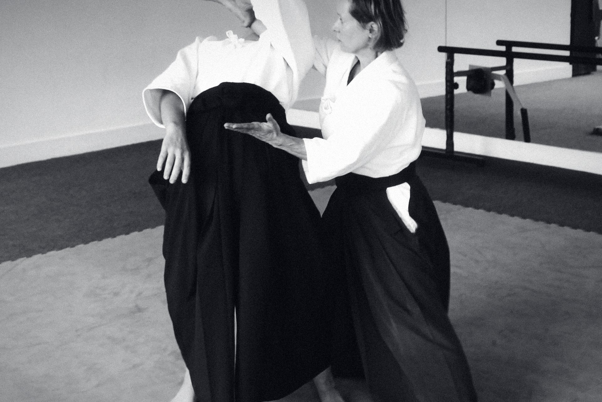

01 The dark room · Brook Green, London
AikidoWest
Aikido in a calm hall in West London, taught the traditional way. Saturday mornings and Tuesday evenings. Any age, any level, no experience needed. Come once and see.
02 Stillness
Before anything happens, the room is quiet.
That quiet is the first thing you learn and the first thing you take home. In an hour on the mat the noise of the week goes out of the body.
03 The circle
合気道
ai · ki · dō
A circle, not a collision.
Aikido is a Japanese martial art built on circles. Force is received, turned and returned, so that nobody is harmed and nothing is forced. You learn to stay calm when pushed, to move from your centre, and to put a person on the floor without hurting them.
There is no competition. The only person you are measured against is the one you were last month.
04 Connection
Every technique needs a partner.
You learn as much from receiving as from leading, and the partner you throw is the one who will catch you. Classes are small. Everyone is seen.
05 The teacher
Arabella Braun, 5th Dan.
Aikikai, Hombu Dojo, Tokyo. Thirty years in the line of Minoru Kanetsuka Sensei. The art reaches you as it reached her: by hand, corrected gently, one movement at a time.
06 Your first class
Come as you are.
Wear loose clothes you can move in and bring water. Everything else is provided, including patience. A first class is booked online and costs what it says; nothing follows unless you decide it should.
What happens
A bow, and ninety minutes.
A warm-up, learning to fall safely, two or three techniques with a partner, a bow, and tea. Tired in a good way.
Who comes
People like you.
People who sit at desks all day. People who have done other arts. People who have done nothing at all. Adults of every age and build, in the same class.
What it costs
Every fee on one page.
No contracts and no hidden extras. Membership, the six-week course and a first class, set out plainly. Times and fees
When
Saturday. Tuesday.
Saturday, 09:30 to 11:30. Tuesday evening, two hours. Adults, eighteen and over.

The hall
A plain room off Brook Green.
The Masbro Centre, 87 Masbro Road, London W14 0LR. About ten minutes on foot from Olympia and Shepherd's Bush, fifteen from Hammersmith. Changing rooms, a swept mat, and a kettle.
07 The door
Comeonce.
Decide after. No experience, no uniform, no promise. Book a first class and the rest follows.
Aikido West
Brook Green · London · 合気道西